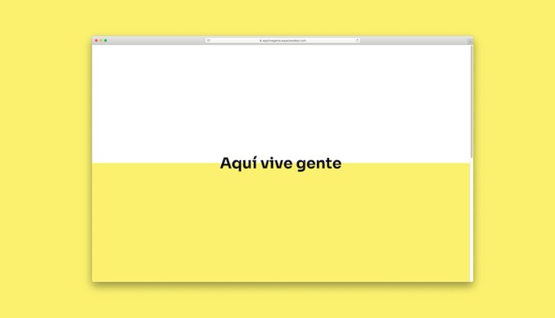
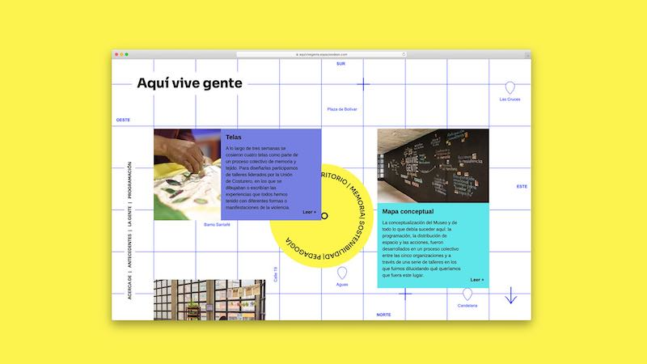
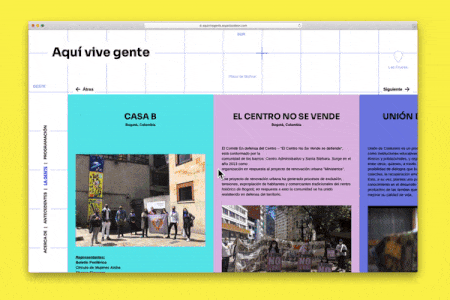

Aquí vive gente is a collective museum project that took its name from an exhibition held by the Brigada Puerta de Tierra in New York.
This project brought together four organizations dedicated to defending and reclaiming the territory and their place in it.
Visit the exhibition → aquivivegente.espacioodeon.com
Role: Web development, Interaction Design
Technologies: WordPress, HTML, CSS, JavaScript


